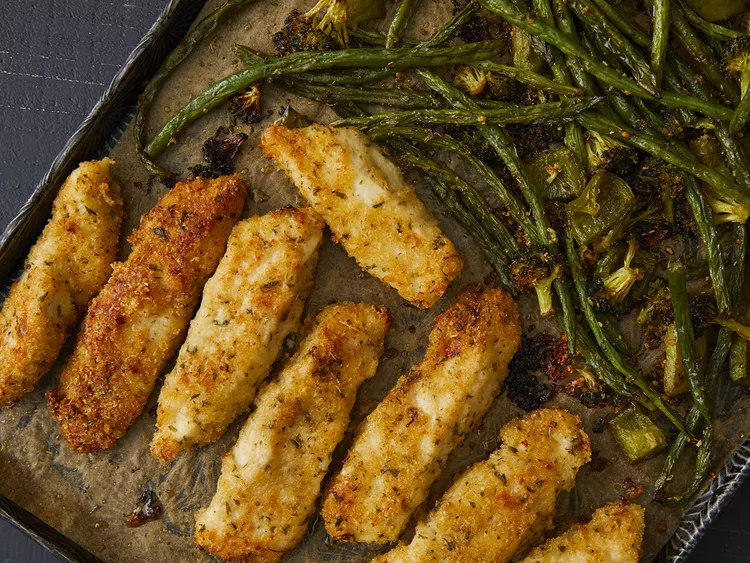

Sheet Pan Parmesan Chicken and Veggies

Warm and cripy delicious chicken is coming home!
Ingredients
- 1 tablespoon dried oregano
- 1 tablespoon dried parsley
- 1 teaspoon paprika
- ½ teaspoon garlic powder
- ¼ teaspoon seasoned salt
- ¼ teaspoon ground black pepper
- ½ pound fresh green beans, trimmed
- 1 small red potato, diced
- 1 sweet bell pepper, chopped
- 1 cup brocolli florets, chopped
- 1 tablespoon minced garlic
- 3 tablespoons olive oil
- ⅓ cup all-purpose flour
- 4 tablespoons butter, melted
- 1 cup panko bread crumbs
- 1 cup freshly grated parmesan cheese, divided
- 1 ½ pounds skinless, boneless chicken breasts, pounded flat and excess fat removed
Steps
- Preheat the oven to 400 degrees F (200 degrees C). Line a sheet pan with parchment paper.
- Combine oregano, parsley, paprika, garlic powder, seasoned salt,and pepper in a small bowl.
- Place green beans, potato, bell pepper, broccoli, and garlic onto the prepared sheet pan, Drizzle with olive oil and sprinkle with 1/2 of the seasoning mix; toss to coat.
- Place flour into a bow;. Place melted butter into a second bown. Mix panko, 2/3 cup Parmesan cheese, and the remaining seasoning mix together in a third bowl.
- Slice chicken into 1 ¼ strips, then coat in flour, Dregge floured strips in melted butter, dripping excess butter back into the bowl. Press into parmesan-panko mixture until heavily coated on both sides.
- Push veggies to one half of the sheet pan. Place coated chicken strips onto the other side. Sprinkle any remaining parmesan-panko mixture over chicken, pressing to adhere.
- Bake in the preheated oven for 10 minutes. Flip chicken strips and stir veggies, then continue to bake until chicken juice run clear and veggies are crisp tender, 10 to 15 more minutes, An instant-read thermometer inserted into the center of the chicken should read at least 165 degrees F (74 degrees C).
- Meanwhile, make the dipping sauce: Whisk mayonnaise, ketchup, garlic power, and Worcestershire sauce together in a small bowl
- Remove chicken and veggies from the oven. Toss veggies with remaining 1/3 cup parmesan cheese. Serve with dipping sauce.
Back